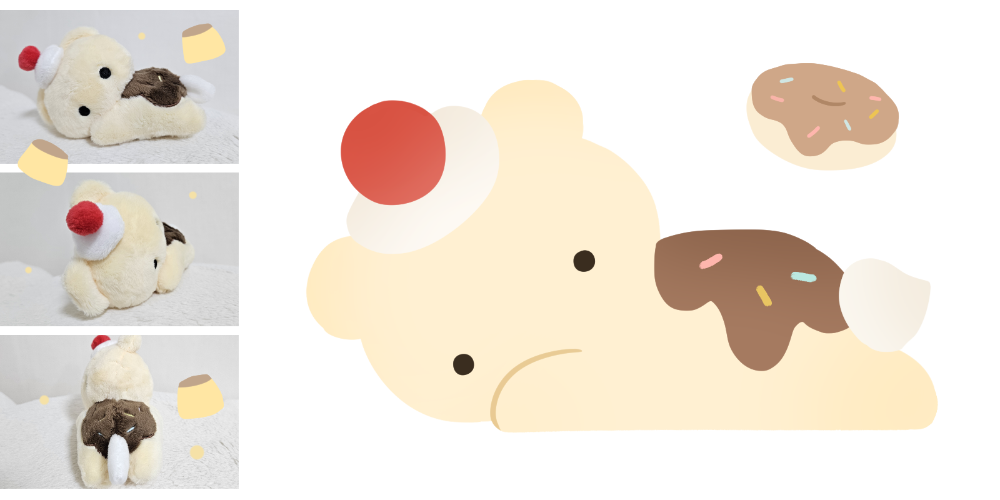
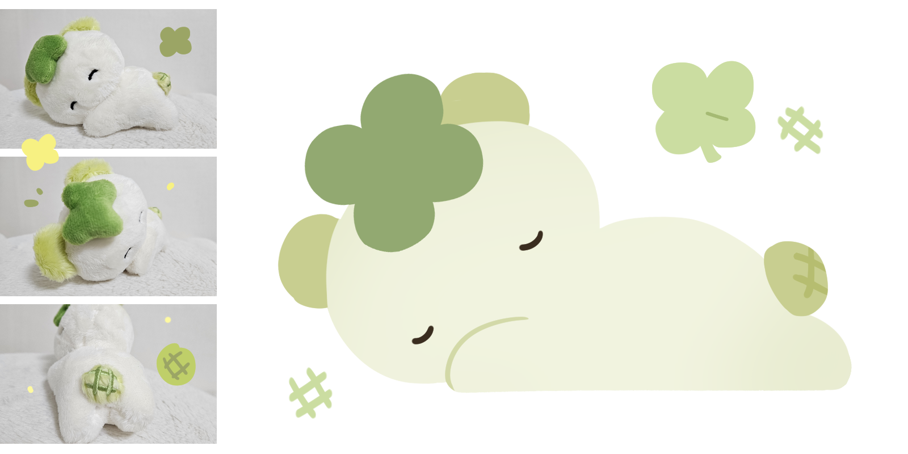
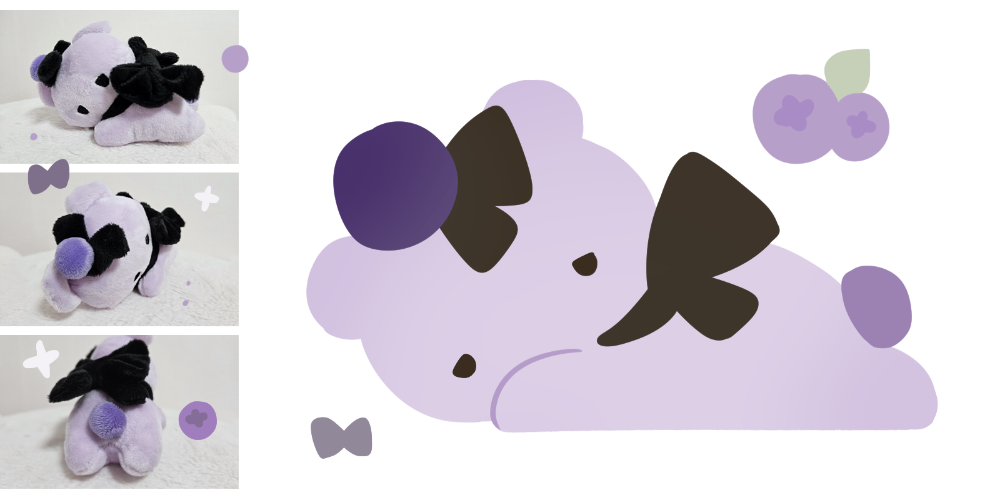

ABOUT
CHARACTERS
BEAR KIT


#봄 #디저트 #행복
개나리가 피는 계절에 태어났어요.
초콜릿, 푸딩, 머핀... 먹는 것이 가장 즐겁습니다.
빵을 굽는 일을 좋아해요!

#휴식 #행운 #숲
일하는 건 너무 피곤한 일이에요.
자동차와 빌딩이 즐비한 도시에서 벗어나,
잎이 가득한 숲속으로 도망치고 싶은 날도 있는 법이죠.

#패션 #데이트 #외출
내 취향으로 나를 꾸미는 것은 활력을 줘요.
좋아하는 색, 좋아하는 리본.
좋아하는 사람과 함께 걷는다면 가장 좋겠어요.